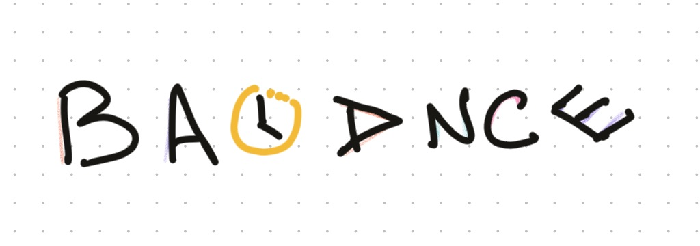

Finding balanceI’m currently on a break from my job. Four weeks away after dedicating my full attention to, what we sometimes say but don’t practice, what’s most important to me: my family.
This break has allowed me to grasp perspective when it comes to how I manage my time. I often have prioritized work over other parts of my life. Sometimes with the feeling of chasing the next step, a salary bump, a better title. With a feeling of work expanding into other parts of life, squeezing time out of other important areas.
I have met a few people that are able to find that balance, to fully thrive without compromising their passions, friendships and health. I have noticed a few traits in them:
- They are unapologetic when it comes to setting boundaries for their time.
- They choose very carefully what they do and are laser focused.
- They prioritize execution over perfection.
I have also come to realize that, finding this balance is very dependent on your strengths, your context and your motivations.
Where do you live, your age, years of expertise in the field, company you work for, personal situation. How do you work best, alone or with others, what are your strengths and weaknesses, what work gives or drains energy. And finally what motivates you.
These are important because you wont be able to find balance if you put yourself in a position where you don’t make the most of your strengths. That means the right company, the right team, the right position.
As a nice coincidence I have come across this quote from a speech from Bryan Dyson, Ex-CEO of Coca-Cola.
”Imagine life as a game in which you are juggling some five balls in the air. You name them – work, family, health, friends and spirit – and you’re keeping all of these in the air. You will soon understand that work is a rubber ball. If you drop it, it will bounce back. But the other four balls – family, health, friends and spirit – are made of glass. If you drop one of these, they will be irrevocably scuffed, marked, nicked, damaged, or even shattered. They will never be the same. You must understand that and strive for balance in your life.”
- Bryan Dyson
Resources that have help me find balance are:
- Make time Book by Jake Knapp and John Zeratsky.
- Designing your life Book by Bill Burnett and Dave Evans.
- Peter trucker managing oneself by Peter F. Drucker.
- Atomic Habits Book by James Clear.
From those resources, there is a key take away. You have to plan and schedule time for the things that are important to you, and create the right environment that will help you make them happen on a daily basis - no matter if its work related or personal. Your holidays, gym time, classes, focus time for that key project, quality family time. If you don’t schedule time for it, most likely it wont happen.
After this break I am more self-aware, but that doesn’t mean I have figured out how to solve this. I’m making this a resolution for the upcoming year to optimize my schedule to better match the lifestyle I want to have, accomplish my goals and spend time with loved ones.